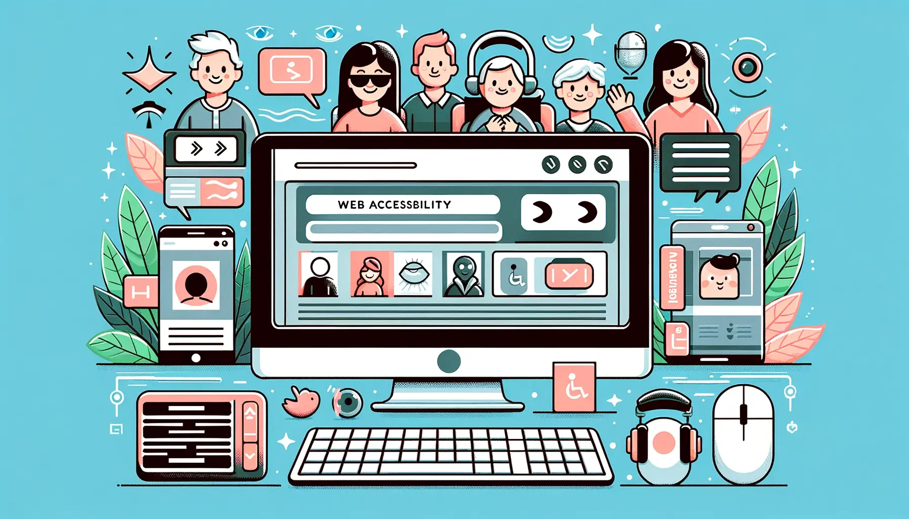

O que é acessibilidade?
Segundo a Lei Brasileira de Inclusão da Pessoa com Deficiência (LBI), acessibilidade é a possibilidade e condição de alcance para utilização, com segurança e autonomia, de espaços, mobiliários, equipamentos urbanos, edificações, transportes, informação e comunicação, inclusive seus sistemas e tecnologias, bem como de outros serviços e instalações abertos ao público, de uso público ou privados de uso coletivo, tanto na zona urbana como na rural, por pessoa com deficiência ou com mobilidade reduzida.
Existem vários tipos de acessibilidade:
- Acessibilidade Física: Rampas, elevadores, sinalizacao tatil
- Acessibilidade Digital: Sites, aplicativos, legendas
- Acessibilidade Comunicacional: Libras, braille
- Acessibilidade Atitudinal: Combate ao preconceito
A acessibilidade traz diversos benefícios para a sociedade, como:
- Inclusão social: Permite que pessoas com deficiencia tenham acesso igualitário a servicos, produtos, etc.
- Melhora da qualidade de vida: A acessibilidade permite que pessoas com deficiência realizem atividades cotidianas com autonomia e segurança.
- Melhora do SEO: Sites acessíveis aparecem para mais pessoas nos resultados de busca, pois os mecanismos de busca consideram a acessibilidade como um bom fator de classificação.